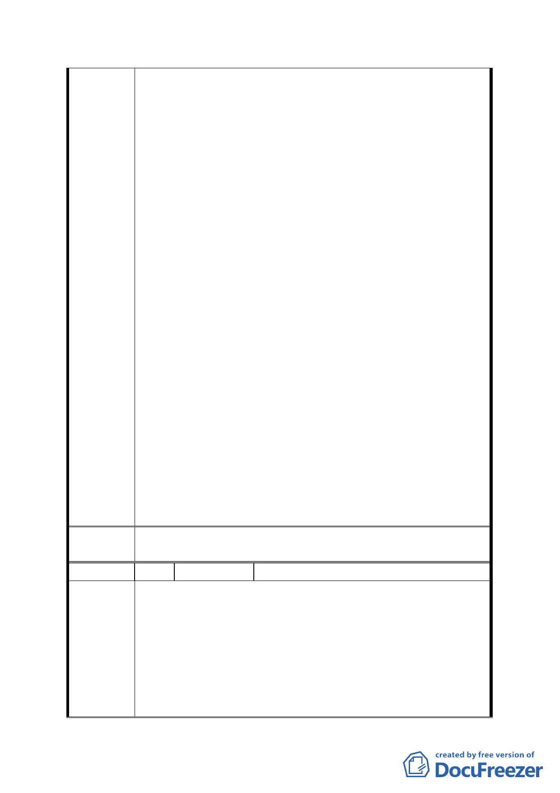

的權利變換價值」、「分開後各繳各的回饋金」、「個別計
畫，但是不要影響原來捐獻的百分之三十的權益」、「需
有彌補機制、如折算容積率等」、「開發人需自行捐贈」
等各項提議，並更有委員要求將其提案列入結論，然本
次會議除未對都發局所提出之計畫書內容進行討論
外，會議主席張副市長金鶚先生，對於發言委員就解除
整體開發後所產生的各種回饋金爭議、捐地爭議，及就
原捐地者折算容積率等提議等更置若罔聞，拒絕就此種
種解除整體開發後可能產生的西北側地主是否須捐
地、威京公司等所作之捐地及回饋金如何處置進行討
論，亦不做成任何附帶建議，並於未經討論之情形下強
行裁示通過都發局所提之計畫書，解除威京公司整體開
發權，顯見張副市長所自稱之審議結論於各委員實際陳
述完全不同，委員會討論之內容與主席做成之決議不
符。
二、本公司依照80年2月13日公告之都市計畫說明書代京華
城西北角二期地主捐贈百分之三十土地，西北角二期地
主之土地因而由工業區變更為第三種商業區，實質上獲
有重大利益，多位委員對此提出各種補償的意見完全符
合公平正義，會議主席張副市長卻完全不予理會，強行
通過解除整體開發，已經損害本公司權益，有違公務員
應依法維護人民權益之義務。
三、因此、本公司對於主席做成之會議決議與事實不符之處
提出強烈之異議，並祈貴會斟酌各發言委員有關捐地及
回饋問題應合併處理之要求，於本次會議中詳實記載各
委員之提議及未經審議之事項，以符合委員會審議之真
實過程，避免本公司權利無端受損。
委
決
員會
議
同編號1-b。
編 號 3-e 陳情人 京○城股份有限公司(103.2.26)
主旨：為對貴會於民國103年1月23日所召閉之第654次委員會
審議「修定「『修訂台北市土地使用分區（保護區、農
業區除外）計畫（通盤檢討）案』內有關八德路四段、
陳情理由
東寧路、縱貫鐵路，八德路四段一○六巷所圍地區（原
唐榮鐵工廠）土地使用計畫案」開發細部計畫案」過程
中主席無視各委員意見，專斷強行裁示通過台北市都市
發展局所提計畫案，及都發局於會議紀錄中提出不實補
充資料企圖魚目混珠一事，提出強烈異議，詳如說明，
-4-